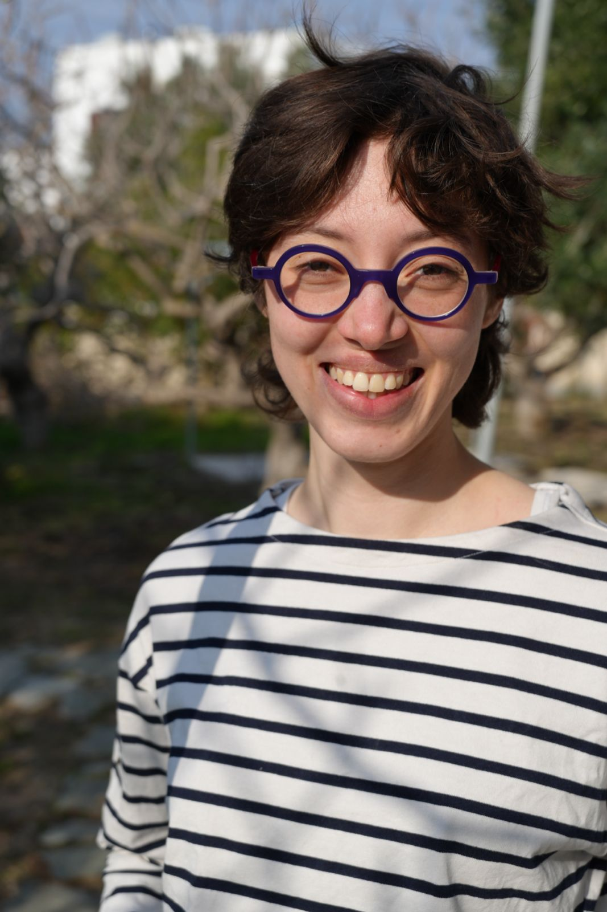

office: IB 2/97
eMail: tal.gottesman(AT)ruhr-uni-bochum.de
Ruhr Universität Bochum
Fakultät für Mathematik
Universitätsstraße 150
D-44780 Bochum 13
Curriculum vitae.
I will be a post doc in
Prof. Dr. Karin Baur's team at the
Ruhr-Universität Bochum (RUB) until september 2027.
From september 2021 to october 2024, I was a Phd student under the supervision of
Baptiste Rognerud at the
IMJ-PRG in Paris.
Research
I am interested in the representation theory of finite dimensional algebras.
During my PhD I worked on incidence algebras of finite lattices.I am looking to
learn more about how to construct geometric models for the objects I have encountered so far.
Publications
- Antichains in the representation theory of finite Lattices, in Seminaire Lotharingien de Combinatoire 91B (2024), available here.
- Fractionally Calabi-Yau Lattices that tilt to higher Auslander Algebras of type A, in Advances in Mathematics Volume 488.Preprint available here.
Preprints
- Pure minimal injective resolutions and perfect modules for lattices,joint work with Viktória Klász, Markus Kleinau and Rene Marczinzik, submitted. Preprint available here.
Teaching
Here are the courses for which I wrote some material. For a complete list of courses and exercise classes I have taught, you can have a look at my
cv.
- Together with Azzurra Ciliberti I taught a class on Category Theory during the Winter semester 2025/2026 at the RUB. More information
- Examples classes for Quivers, Algebras and Representations at the Ruhr-Universität
Bochum. Winter semester 2024/2025. More information
- Oral examinations ("colles") at Université Paris Cité. Spring 2022. More information
Documents
- In 2024 I defended my thesis on Fractionally Calabi-Yau Lattices. Here are the slides I used during my presentation.
Last modified: February 2026.